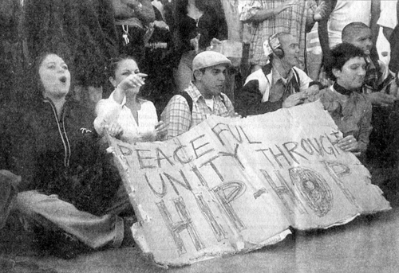

LAPD Beach Riot
I think it was another great winter day at the beach. One of those typically warm Sundays when it's just great to cruise the boardwalk, maybe have a picnic on the lawn, or, if you're not from around here, just get out of the city and go to the beach. L.A.'s beach, Venice.
Ten years ago, practically right on this date, some kids of L.A. wanted to hold a concert of their own music, like so many other previous generations had also done. Just let us do what we want, is all they asked for. So on Sunday, February 28, 1999, the Graffiti Pit held court to several hundred hip-hop dancers that were holding a contest, at Yu's B-Boy Summit '99 dance concert. It was the final installment of a three-day hip-hop music and dance show being held at UCLA.

Attendees at a hip-hop dance exhibition before the event turned into a confrontation.
Hip-hop has often been credited with helping to reduce inner-city gang violence by replacing physical violence with dance and artwork battles. City teenagers, after years of gang violence, were looking for new ways to express themselves. These outdoor parties became a means of expression and an outlet for teenagers, where instead of getting into trouble on the streets, teens now had a place to expend their pent-up energy.
"Kool Herc," the originator of hip-hop.
Jamaican-born DJ Clive "Kool Herc" Campbell is credited as originating hip-hop music, in the Bronx section of New York, after moving there at the age of thirteen. Herc created the blueprint for hip-hop music and culture by building upon the Jamaican tradition of toasting, or boasting impromptu poetry and sayings over music, which he witnessed as a youth in Jamaica.
In the early 1970s, Herc and other DJs began organizing dance parties in the recreation room of their historic building "where hip-hop was born," 1520 Sedgwick Avenue, the Bronx. The parties became so popular they were moved to outdoor venues, such as public basketball courts, to accommodate more people. They'd just tap into the power lines to connect their equipment and perform, and the party was on.
But I guess things got out of hand at this local dance party, and police were soon called-in, after some rival dancers supposedly began fighting.
At least that's how it seems. In a recent composite of newspaper articles from the day, the facts seem to turn against these youthful kids, only having some fun, and for the once-again-demonstrative riot-prone LAPD.
I still don't quite understand all the under-currents of the political system involving Venice and Los Angeles. I know that's a huge story and not for here. Although, this LAPD riot just goes to show you how crazy L.A. is, and what they'll do to extinguish the world of artistic expression. By any means possible.
More to the point. According to the accumulated accounts, this whole melee was started by some LAPD officer trying to nab a would-be graffiti tagger, who, while chasing him along the beach, unexpectedly followed him into the Pit, and was confronted with not just him, but a whole passel of look-alike kids, who were in no mood for some cop to come bust-up their party. Around 2 p.m., the officer pursuing the vandal was surprised to find the gathering there, and that the crowd antagonized him by throwing rocks and bottles. So he radioed-in for help. That's when things got ugly.
Officers attempted to break up fights, but instead found themselves dodging all kinds of flying objects from the unruly crowd. Between 100 to 150 police in riot gear, now under a citywide tactical alert, were called out to disperse the crowd and decided to close the entire boardwalk. They spent more than three hours attempting to clear the beach, and were frustrated by beachgoers who refused to leave.
Los Angeles police officers were called out and eventually closed the Ocean Front Walk.
The confrontation ended with six arrests, two heavily damaged police cruisers and several graffiti-smeared news trucks. The boardwalk was quiet by nightfall. No serious injuries were reported.
Event organizer Asia Yu was initially asked to help quiet the crowd, at the beginning of the unrest. She felt she did, by urging the crowd to leave the scene or to sit down. The police thought otherwise, saying they asked her to help, but she didn't do that. "She got on the loudspeaker system and said things to incite the crowd," according to LAPD Capt. Gary S. Williams. So Yu was arrested on suspicion of inciting a riot. However, she claims police ignited the situation by overreacting.
News of the beach clearing provoked a very direct response from one beach denizen.
"I think the whole thing could have been controlled without resorting to this sort of violence," said Neil Stratton, an artist and witness to the event. "There were a lot of 13- and 14-year-old kids who were involved who I think the police were unnecessarily violent with. They were using night-sticks and batons to prod them and hit them in order to get them to move more quickly."
That's how he felt, and was quoted as such, 10 years ago. I recently asked Neil to again relive that day. Here's his thoughts:
I remember that day, and it was very upsetting. When Jen and I biked to the beach that morning we saw that the police had assembled groups of officers in cars and horseback at numerous strategic points all around the boardwalk and access streets. There were closed roads demarcated with cones, and traffic officers in the ready for what looked to be some massive event. Horse trailers were parked nearby, and officers suited up and prepared. We only learned of the music event because of the big show of force the police assembled to manage it, so when Jen and I got to the graffiti pit we were surprised at how small the event turned out to be. It was a tiny group of kids wholly into their own scene, just another of the many groups at the boardwalk that day. The music wasn't even that loud. It looked more like a DIY festival that could have been put on without even notifying any authorities, but the organizer of the event had in fact gone through all the appropriate channels and had been given the permits to assemble.
In an unrelated incident nearby several hours into the event, some taggers spray painted on the pit walls, which you will remember were covered with decades of graff writing. It was a world-famous spot to write in, and these guys had indeed traveled as a pilgrimage to this spot. So when the police told the taggers to stop writing, they questioned the officers, pointing to the sea of paint around them. The officers apparently did not like being questioned, and the argument turned to a chase and allegedly someone threw a bottle, although no one I know saw that.
Since Jen and I were on bikes we had an overview of the scene as it unfolded, able to stay ahead of the riot police when they quickly started coming in rows from the south and north. What we saw was not a response to a tiny incident with some taggers, or a reaction to an event gone bad, but a coordinated training operation. As with so many police riots, they were the ones who made it a riot. We witnessed police in riot gear pushing women and children to the ground because they were not moving fast enough, and swinging batons at people who had their blankets laid out on the grass. It was a beautiful day, so there were all kinds of people strolling around, picnicking on the mounds. We could not believe our eyes as we watched tourists, families, and kids running from a line of dark suited soldiers hitting whatever was in their way. In one horrifying moment, officers beat a man who was on the phone with his back to the line of officers, oblivious to the fracas. The officer began hitting him with a baton from behind, and the man fell to the ground cowering.
We raced on our bikes from one end of the melee to the other as it slowly shrank in from the ends as the police cleared the boardwalk through the corridors they had laid out at the start of the day. It was clear to Jen and I that they were trying out pre-planned crowd control techniques. The LAPD had suffered several humiliations at that point, the LA riots of April 29, 1992 still a fresh wound, and this was their training day. We were outraged that our beachfront playground had been turned into violent exercise in PD PR, and that night we were shocked to see how under-reported and misrepresented the whole incident was on all the local news channels. We taped one of the reports and coincidentally saw footage of the man on the phone being beaten we had witnessed earlier.
Filled with outrage we cried, frustrated, and decided something had to be done, but what? We felt so helpless in the face of such a huge injustice. We knew that our power lay in our voices as artists, so we decided to make a protest chalk painting on the site of the fracas depicting this beaten phone man. We called our friend Gary Palmer, a street painter we've done many collaborative paintings with before, and made a plan to depict the incident together. Jen and I worked late into the night making a stencil for the layout, and early the next morning we all set out to make the painting. Now, we had made numerous paintings on the boardwalk before, and they had always been welcomed. After all, they are temporary chalk paintings, and the performance part of the painting always made people smile. Well, we were able to paint without problem until the image started to become clear. As soon as the picture of an officer swinging a baton emerged, four patrol cars pulled up and tried to arrest us. It became a standoff as we asserted that this was a protest protected by free speech. We stood at an impasse while I called Judy Baca at SPARC (with whom Jen and I had been working with to start a Venice street painting festival) and also placed calls to all the local news channels announcing a press conference on the riot.
LAPD officers checking out the street painting of the melee.
Unfortunately Jen had to leave in the afternoon for her shift as a waitress and Gary had another obligation too, so I was left alone to guard the near finished painting until the reporters arrived. The officers I had been dealing with had agreed to leave the painting as it was until we could sort out the legality of our protest, but the instant I had my back turned, a homeless man threw a bucket of water on the chalk, melting the painting into a puddle of colors. He admitted to me with a smirk that an officer had paid him to do it. Just then one of the local channels showed up with a reporter and camera looking for the painting. I was crushed and embarrassed, and without the painting my story collapsed. But somehow Asia Yu, the organizer of the music festival, heard that I had called a press conference and showed up in just that moment, freshly released from jail. She was able to give an interview and have her voice heard that evening on the news. I was happy that it had worked out for her in spite of my failure, but of course as I watched the segment I was again appalled that reporting skewed in favor of the police.
--
It always seems that way. The L.A. Times headlined their meager coverage the following day with "Rowdy Beach Crowd Throws Bottles at Officers." On the following Thursday, in the Santa Monica Our Times, the spin was "Beach brawl blamed on crossed signals."
It stated that police said they were never notified of the dance event that resulted in the six arrests. This clash between hundreds of beachgoers and scores of police could have been avoided if authorities had been warned about a planned hip-hop dance exhibition at the Venice Pavilion, the local LAPD captain said.
In the wake of the melee, Capt. Williams said the department was investigating what may have been a breakdown in the permit process. Williams said police were never notified about this event that he says drew about 1,000 people next door to the LAPD's Venice Beach substation.
"There has to be a better way of dealing with the permit process so that we're notified of things like this," said Williams.
But while police say they were caught off guard by the event, organizers insist that it wasn't their fault. Asia Yu said she had informed an LAPD beach sergeant of the dance exhibition beforehand, just as she was instructed to by the Recreations and Parks Department, and that they had paid their $200 fee.
"We did exactly what we were told," Yu said.
So why the riot? Is this any way to handle differences? Can't we all just get along? Boardwalk resident Diane Bush said she and other residents had long lobbied the city to place additional police along the beach during the non-summer months.
"There's just this mentality that people don't come to the beach when it's not summertime, and that's so wrong," Bush said. "We need more police here."
I don't think she meant rioting police, however.
But that was 10 years ago, pre-Y2K craziness, pre-Bush administration lameness, pre-Graffiti Pit destruction and pre-911 horror. Heck, it was only just more than a month after Britney Spears released her first album, "Baby, One More Time." Things were different back then, and a small concert could become a major deal. Yet luckily, times changed.
Today's visiting crowds are more racially mixed, less obtrusive in their individual mannerisms, and more likely to cooperate within Venice's hurly-burly weekend atmosphere. Less likely to be picked-on by the local cops.
I'm just hoping that today's new political climate has helped put aside those societal differences, of only so little as 10 years ago, so that Venice can continue to be the progressive, being-with-it town that it's always been, in its young 104 year history.
|